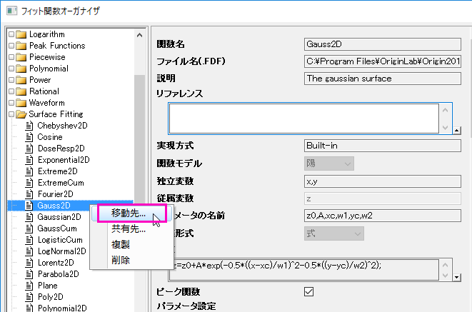
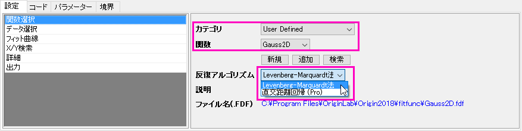
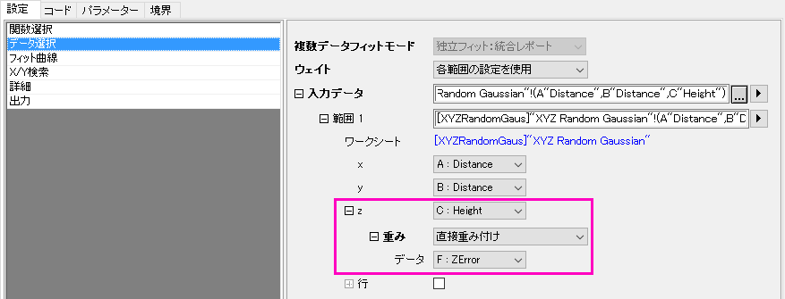
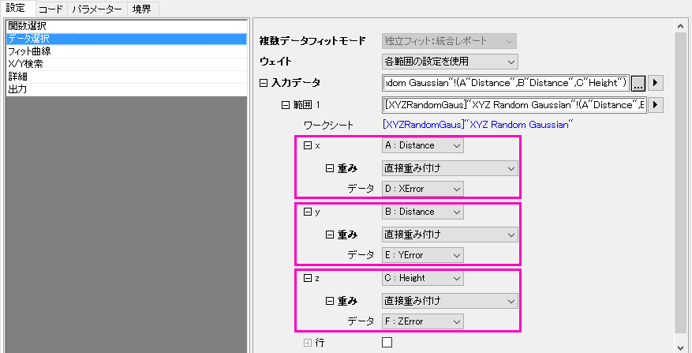

FAQ-894 エラー付き3D XYZ曲面をフィットできますか？
Fit-Surface-WithErr
最終更新日:2017/9/21
エラー付き3DXYZ曲面をフィットしたい場合、次のように操作します。
- まず、フィット関数オーガナイザで Surface Fittingカテゴリーにある3D曲面の関数をUser Defined に移します。
- 
- XYZデータのワークシートをアクティブにして、Zデータを選び、メニューから解析: フィット: 非線形曲線フィットを選択してNLFitダイアログを開きます。移動したフィット関数を選択します。
- 
- 反復アルゴリズムについて
- Levenberg Marquardt法を選択した場合、データ選択ページではZエラーのみ含めることができます。
-
- 
- 直行距離回帰(Pro)を選択した場合、全方向(X、Y、Z)のエラーバーをフィットに含めることができます。
- 
フィットの重み付けの設定については、このページを参照してください。
キーワード:フィット, 曲面フィット, エラー付きフィット, エラー付き3D曲面